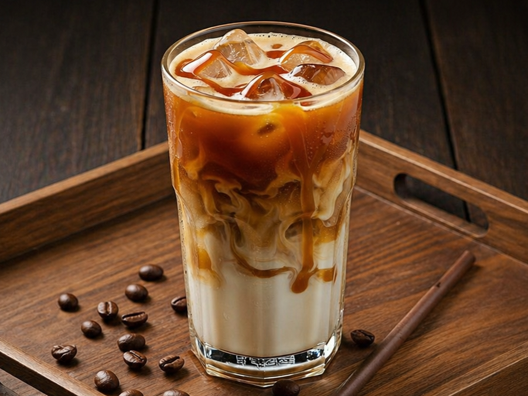
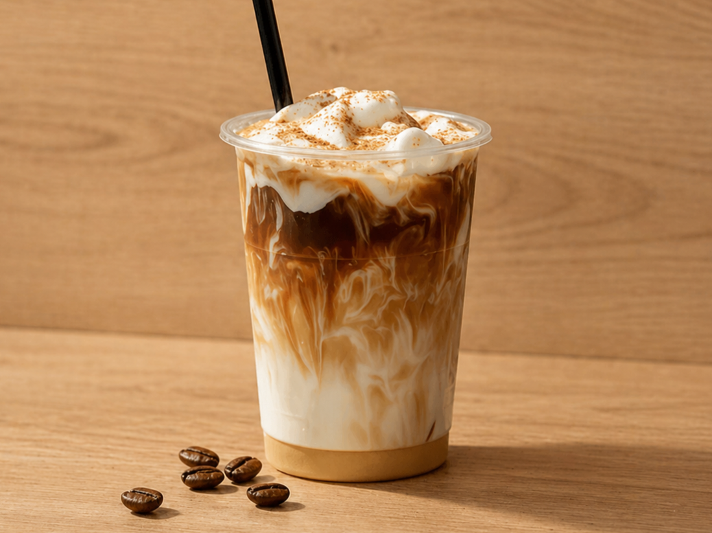

Good coffee, made easy
Come make coffee with us
Find your perfect cup with simple recipes made for you. It's all about good coffee and a bit of peace.


Make your coffee with our recipe
Simple steps, balanced taste, and a moment of peace in every cup.


What We Offer
01
Drink Recipes
A collection of simple coffee and café drinks you can make at home. Simple steps, good flavor, and nothing extra.
View Recipes → 02Coffee of the Day
A new coffee featured each day. A chance to explore different tastes, origins, and brewing styles.
Today's Pick → 03Our Philosophy
At Pacifico, coffee is kept simple and intentional. We focus on quality, balance, and creating a calm, peaceful coffee experience.
About Us →
Today's featured cup
Coffee of the Day